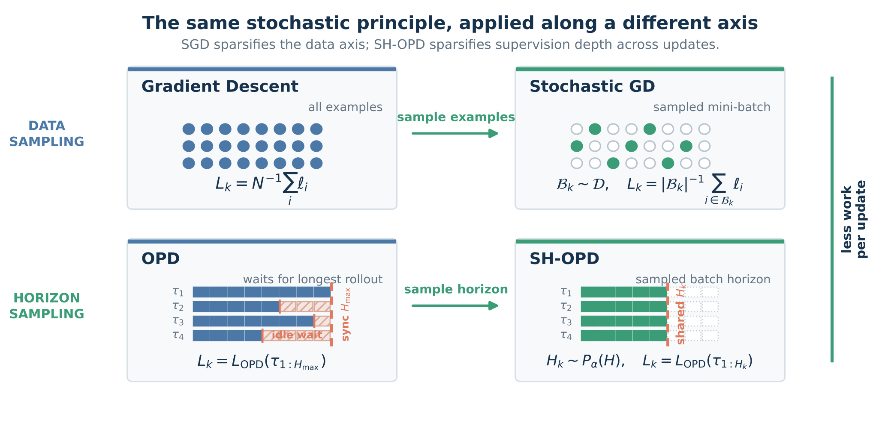
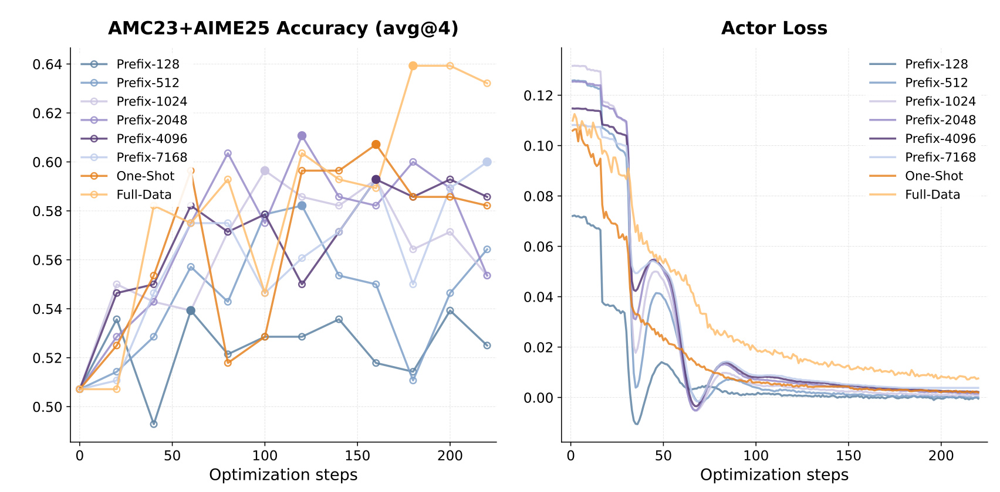
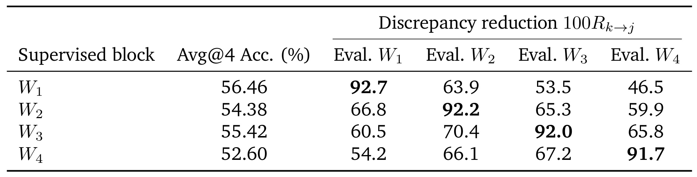
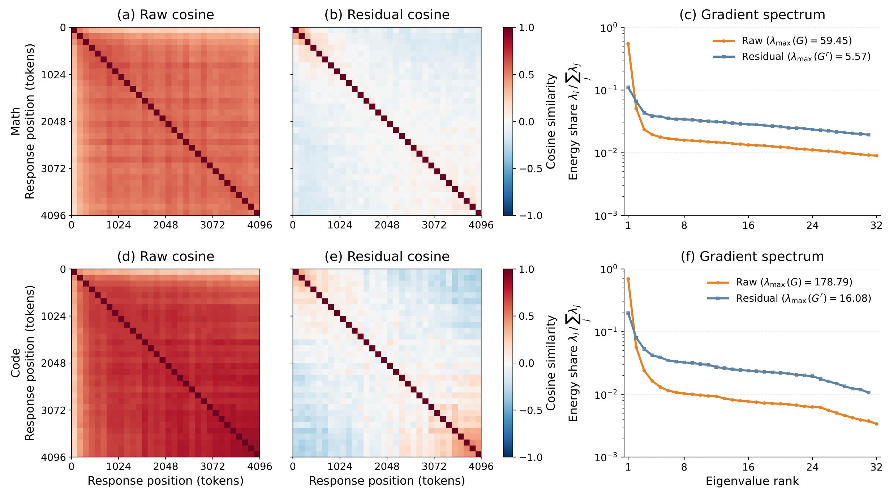
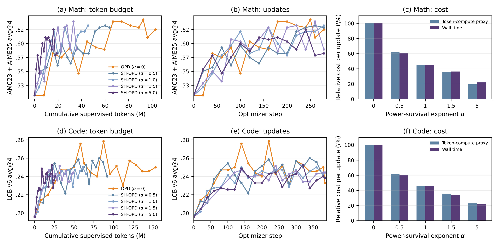
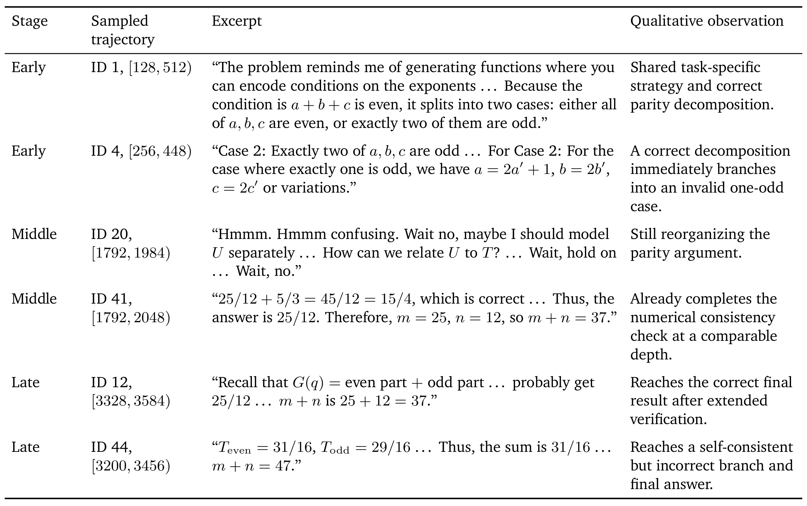
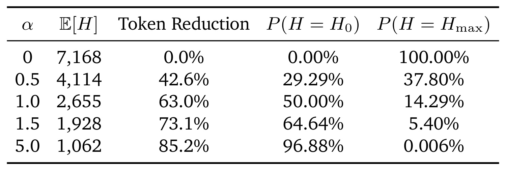
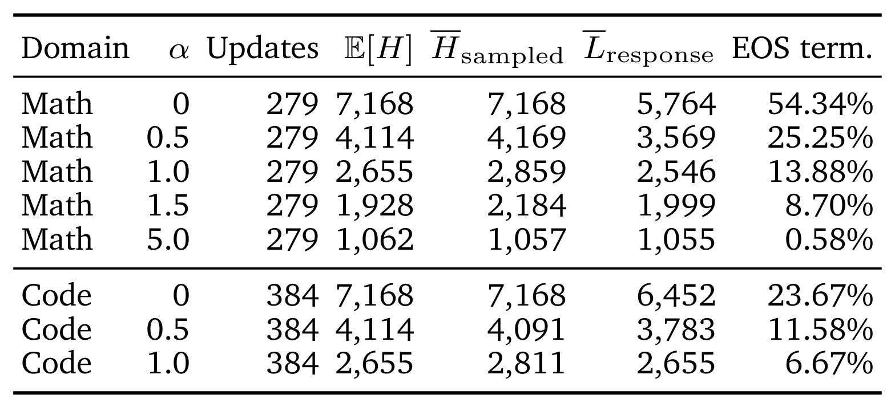
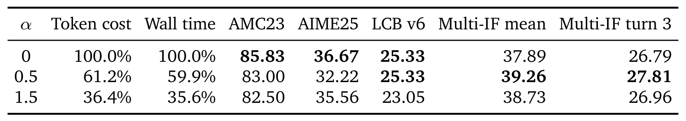

SH-OPD：用随机监督深度分配在线蒸馏的计算预算
Xinhao Yao、Zhenxing Dou 与 Yong Liu，均署名中国人民大学，研究学生自产轨迹上的逐 token 蒸馏监督是否值得每次覆盖到最深位置。论文原题为 Rethinking Supervision Scaling in On-Policy Distillation: From Dense Supervision to Stochastic Horizons；论文入口首次提交为北京时间 2026 年 11 月 16 日 15:51，本次访问与整理于 11 月 18 日。作者的 SH-OPD 代码仓库页面已核验可访问，未复跑实验。本文按预印本阅读，原站标注工作仍在进行中。
学生生成更长轨迹会带来更多逐 token 教师监督，但学习收益未必随生成、教师评分与学生优化成本同比增长。不同位置可能重复强化相同更新，也可能包含不能被早期位置替代的修正，因此需要削减冗余监督，同时保留深层状态的学习机会。
1. 背景和问题
On-policy distillation 的关键是由当前学生生成轨迹，再让固定教师对学生真正访问到的前缀提供信号。学生经常会走到教师离线示范中没有出现的状态，若只模仿教师自行生成的完整答案，就存在训练前缀与部署前缀不一致。OPD 把教师放到学生轨迹上评估，缓解这类分布错配。它与仅在序列结束时给一个正确性奖励的训练也不同：一条长为 N 的回答可以在每个 token 位置提供相对偏好，从而产生大量细粒度监督机会。本文讨论的效率来自这些监督机会的分配，不是改变教师能力或重新设计答案判分器。
然而，每多生成一个 token 都不只是增加一个训练标签。学生需要继续自回归生成，教师需要在对应前缀上评分，学生也要处理增加后的序列。有效监督位置数因而同时连接生成成本、评分成本和优化成本。即使 loss 里每个 token 的形式相同，不同位置所诱导的参数更新也未必独立。如果前几百个 token 已经反复推动某个共享方向，后面数千个 token 可能主要继续强化这个方向，而没有提供同比增长的新信息。把监督 token 总数直接当作独立学习信号数，是作者希望重新检查的假设。
这里要区分两个容易混淆的问题。一是后半段 token 是否可以被学生学会，二是额外学习后半段对未见题目的表现能增加多少。一个位置上的师生概率差可以大幅缩小，但不一定带来相同比例的验证集正确率提升；反过来，一个对当前平均成绩贡献有限的位置，也可能包含某类稀有推理纠正。仅观察长轨迹训练的平均收益变小，不能证明后半段都没有价值。因此作者没有直接从“长序列昂贵”跳到“永久截断”，而是依次做固定状态、等监督预算和梯度几何的诊断。
固定前缀重放首先把同一批初始学生轨迹保存下来，再暴露不同长度的嵌套前缀。这样更长前缀增加的是原轨迹中较晚位置，而不是重新抽到另一批问题或另一种推理路径。作者在每一步仍用更新后的学生参数重新计算师生差异，所以冻结的是访问状态，不是训练信号数值。这个设置可以隔离前缀长度，但它本身并不是正常的持续 on-policy 训练。需要把这一受控诊断与后续真正随学生更新而重新采样的 SH-OPD 效果区分，否则会把“旧轨迹上前缀收益饱和”误读成“所有在线蒸馏都只需要早期 token”。
等预算位置控制进一步保留能生成至少 4,096 token 的共同轨迹子集，分成四个各 1,024 token 的区块，每次只对一个区块监督。四组具有相同初始化、更新次数和被监督 token 数，前面位置仍作为因果上下文存在。它回答的是：如果训练预算相同，只改变标签出现在哪一段，学生对各位置的拟合与下游表现会怎样变化。这种设计避免把长轨迹样本本来更难、样本数不同或每步标签更多等因素混入“位置影响”。结论只针对共同长轨迹子集，不能自动推广到早早结束的回答。
作者还考察原始梯度和减去共享均值后的残差。共享方向解释跨位置迁移，残差解释不能完全替代的局部更新；两者同时存在，才构成随机深度设计的动机。残差彼此有负余弦，不意味着完整区块梯度发生了同等程度的冲突；减去同一个均值也不是把梯度正交投影到一个剩余子空间。作者对这两点做了明确约束，阅读时不宜把彩色热力图中的蓝块直接说成不同推理阶段互相抵消。更深位置的残差跨样本一致性下降，也只表示估计到的方向不稳定，不足以证明它们全是噪声。
已有工作已经提出短前缀蒸馏、固定或渐进截断、逐 token 重要性选择以及随机提前结束。本文的增量不在“第一次知道长回答可截短”，而在于把跨位置监督迁移、残差结构和计算预算放到同一解释框架。特别是作者对比了通过逆概率权重校正截断偏差的思路：SH-OPD 选择保留原始 token 均值损失，并接受、分析随机深度带来的系统性重加权。它没有声称得到完整 horizon 梯度的无偏估计，也没有在训练中显式计算每个残差方向并进行选择。
这个问题与推荐或个性化模型的关联主要在训练范式，而不是直接的 CTR 效果。若用长推理轨迹、用户行为解释或工具调用过程蒸馏学生，也会面临每段监督是否重复、后段是否含稀有约束的问题。但自然语言推理的因果前缀结构，不等于推荐行为序列中越旧的交互；本文没有验证对历史行为按位置随机截断，也没有证明可以不损失长期兴趣。值得迁移的是分开观察监督预算、位置可学习性与最终任务效用的实验设计，而不是把同一截断比例直接用于另一业务。
实际部署还要区分训练与推理。SH-OPD 在训练 rollout 开始前抽取长度上限，以降低本次生成和更新的工作；推理时仍使用训练后的普通学生模型，并不要求给每个在线请求随机设定短 horizon。论文中的低成本数字也不是在线生成 token 数、首 token 延迟或服务 QPS。这个边界很重要：训练更便宜可能使研究者在同预算内做更多更新，但要证明同质量训练总时间更少，仍需要清楚的目标成绩、总步数、评估开销和停止规则。
作者选择的中等题 t22 来自 DAPO，初始学生在八次采样中答对四次，避免简单题迅速饱和或难题始终不会带来的诊断失效。这是有意识选择的可学习区域，并非代表整个数学数据分布。原研究关于单题 OPD 的其他难度鲁棒性也不能直接继承为本论文位置诊断的证据；本文回答的是这套固定访问状态下增加监督深度会怎样，后续需要用真正全数据重新采样的主实验补足有效性。这样的证据顺序有助于把机制解释与算法效果相互支撑，同时保留二者各自覆盖范围。
2. 方法
2.1 学生轨迹上的逐 token 偏好与分块
给定问题 x，学生策略生成回答 y，固定教师在相同前缀状态上评估学生选中的 token。教师相对更偏好这个 token 时，停止梯度的对数概率比为正，学生损失鼓励提高其概率；相反则抑制它。这里的优势项被视为常量，避免把它当作另一个需要反向传播的目标。原文从 reverse KL 动机引出实际的策略梯度式代理，笔记保留其 token 均值写法，而不将单个采样 token 的信号冒充完整词表 KL。
符号解释：$\pi_t$ 是固定教师，$\pi_\theta$ 是当前学生，$s_i=(x,y_{<i})$ 是学生已经生成的前缀，$N$ 是有效响应 token 数，$A_i$ 是相对偏好，$\ell_i$ 是该位置的代理损失。监督状态来自学生，偏好来自教师，损失对有效 token 求均值，是后续 horizon 采样仍保留的基本接口。训练更长并不会改变这一个位置的公式，改变的是哪些前缀会被访问、各位置出现的频率，以及它们在均值中的权重。把轨迹生成和损失截断分开，才能辨别真正减少了 rollout 工作，还是只省掉后半段的反向计算。
符号解释：$\mathcal I_k$ 是第 k 个连续区块的位置集合，$n_k$ 是其中有效 token 数，$m$ 是等长分块长度，$K$ 是区块总数。原文 Eq.3 的等权块均值要求等长，最后不足一个块时应回到前面的 token 权重。这个分解不改变 OPD，只提供了分析监督位置的单位；真正的 SH-OPD 后面按整个 batch 的有效 token 聚合，也不能随意改成每条序列先平均、再让长短序列同权，否则会引入另一种权重变化。
2.2 一个 batch 共享随机生成上限
作者设定基础 horizon 为 1,024，最大 horizon 为 7,168，允许七档长度。每次更新先采样一个上限，广播给本批全部 64 条轨迹；每条回答遇到 EOS 或共享上限就停止。上限只控制生成何时终止，不作为条件 token 喂给学生，也不是先完整生成再截断。这样可以直接减少 rollout 的实际工作，且无需为同批每条序列配置独立的随机调度。采样深度不是只取固定短前缀：在有限正 alpha 下，最深上限仍有非零概率，只是频率降低。
符号解释：$H_0$ 是基础长度，$H_{\max}$ 是最大长度，$H$ 是本批抽到的上限，$k$ 是长度档位，$\alpha\ge0$ 调节偏向短轨迹的程度。alpha 为零时所有质量集中到最大 horizon，精确恢复标准完整轨迹 OPD；alpha 越大，越常抽到短档。这个分布从生存概率定义，不能把 $k^{-\alpha}$ 直接当作各档概率。有限 alpha 虽保留深层机会，但当最大档概率极小时，有限训练期中仍可能几乎看不到深层状态，理论非零不等于实际覆盖充分。

Figure 1 上排用全量梯度下降和小批量 SGD 类比数据轴采样，下排才是本文在监督深度轴上的变化。左下多条蓝色 rollout 等待共享最大长度，右下绿色 rollout 在该批抽到的长度处停止；条带是示意，不是实测 GPU 时间线或空转比例。右下损失仍作用于保留下来的全部有效 token，表明算法没有额外挑选高分 token，也没有在每步计算残差分解后按方向删监督。图中共享 horizon 让不同 worker 使用同一个生成上限，但自然 EOS 仍可以造成长短不同，所以不能从条带齐头就推断 batch 内没有 padding 或等待。其价值在于把“抽数据”和“抽监督深度”这两个控制变量区别开，同时保留训练更新沿用原 OPD 的接口。类比也有边界：对数据做均匀采样可以构造无偏梯度，而 SH-OPD 对前缀求均值使早期块进入更多次采样，作者随后专门分析这种偏差。因此不应只用“像 SGD 一样采样”来断言其理论目标不变。推理阶段不需要复现图中的随机长度调度，学生仍按部署任务的停止规则生成。作者还刻意保持 rollout batch 大小不变。理论上短上限可能腾出显存或 token 预算容纳更多轨迹，但本实验没有同时扩大 batch，以免把长度效果与更多问题或更多独立采样混合。右下的并行设计也不表示要对每条序列补逆概率权重；实际沿用全部有效 token 的均值，因此共享短上限会系统增加早期位置相对权重。这个选择是算法定义的一部分，而不是调度实现可以随意忽略的细节。若后续改成逐序列独立抽样、按序列均值聚合或扩大 batch，都需要重新检查重加权与效率，不能直接沿用本文对应的计算比例。
符号解释：$w_{\alpha,j}$ 是理想等长区块且轨迹都达到抽样上限时，第 j 块得到的期望权重；$B$ 是 rollout batch 大小，$N_b$ 是第 b 条回答经 EOS 或上限终止后的有效长度，$\mathcal L_t$ 是实际 batch token 均值损失。越早的块被越多档上限包含，权重通常更高；所有权重归一化，但不再都等于 $1/K$。期望 horizon 描述名义响应预算，实际响应可更短，prompt 处理与评分也有额外成本。因此上式既解释计算为何减少，也解释为什么不能只拿 $H_\alpha/H_{\max}$ 作为真实墙钟比例。
2.3 计算收益与深度重加权偏差
理论把当前参数下的随机更新拆成完整 horizon 的参考方向、随机 horizon 相对它的系统偏差和条件均值为零的随机噪声。所有分量都在随训练变化的学生参数处定义，不能将初始化的一张热力图当作整个优化过程固定不变的矩阵。在等长区块、轨迹达到采样上限且采样不改变已观察前缀分布的理想设置中，权重变化的总和为零，因此共享方向会在差值中消掉，偏差由各块相对共享均值的稳定残差决定。
符号解释：$h_0$ 是同一当前参数下完整 horizon 的期望更新，$b_\alpha$ 是系统偏差，$\xi$ 是条件零均值噪声，$\Delta w_{\alpha,k}=w_{\alpha,k}-1/K$，$\delta_k$ 是第 k 块期望梯度减去共享方向，$G_{\mathrm{stable}}$ 是这些总体残差的 Gram 矩阵。残差越有稳定且大的方向，改变其权重的代价可能越高；方向与权重相互作用，不能只看 alpha 大小。经验诊断里的有限样本残差还含采样波动，与这里先取期望再中心化的总体残差不同，论文没有把二者数值等同。
符号解释：$C$ 是总名义响应 token 预算，$T_\alpha$ 是可执行更新次数，$L$ 为参考势函数平滑常数，$\Delta F$ 是初始势函数与下界之差，$\sigma_\alpha^2$ 控制随机更新方差，$\mathcal B^2$ 是训练路径上平方偏差均值，$\mathcal E$ 是平均梯度范数平方。这里保留附录 Eq.33 的有限预算形式，主文 Eq.8 的简写省略了 $C^{-1}$ 项，只是主导项表达。推导另要求存在下有界平滑势函数且其梯度等于完整 horizon 的期望 detached OPD 更新；这个条件并不由代理损失自动保证。上界更紧也不是实验准确率更高的充分条件。算法在实际训练中没有估计该上界来自动选 alpha，而是做任务相关的经验扫描；理论提供解释框架，不能称作已证明的普适最优长度策略。
3. 实验结果
3.1 从固定前缀到等预算位置控制
主实验学生为 DeepSeek-R1-Distill-Qwen-1.5B。数学教师是 JustRL-DeepSeek-1.5B，在 DAPO-Math-17K 上训练，评估 AMC 2023 与 AIME 2025；代码教师是 DeepCoder-1.5B-Preview，在 TACO 上训练，评估 LiveCodeBench v6。使用四次采样的 avg@4，代码以执行结果判分，不能把它写成 pass@4 或四次中任意一次成功。默认 rollout 和 minibatch 都是 64，AdamW 学习率为 $10^{-6}$、weight decay 0.01、梯度裁剪 1.0、采样温度 1.0 与 top-p 1.0，硬件为四张 NVIDIA H20。数学 prompt 最多 1,024 token，代码最多 4,096，响应最大均为 7,168；各任务内保持其他优化参数一致。

Figure 2 左图横轴是优化步，纵轴是 AMC23 与 AIME25 的 avg@4 平均准确率，不是单一训练题的答对率；右图是相同设置的 actor loss。多种前缀来自同一中等难度问题的 64 条冻结轨迹，长度依次为 128、512、1,024、2,048、4,096 和 7,168，另有持续重新采样的 One-Shot 与全数据 OPD 参考。嵌套关系使长前缀条件确实包含短前缀的监督集合，但在固定轨迹上观察到，超过约 1,024 后增加的位置没有换来同等幅度的验证收益。右图各组 loss 都很快下降，不能简单将长前缀收益有限归咎于没有优化到位；也不能把训练 loss 更小直接当作跨题泛化更好。左图后期波动明显，作者将它联系到固定 one-shot 重放的估计误差，没有给出多训练种子置信带，因而应读取总体的边际收益趋势，而不按某个偶然峰值给所有长度排稳定名次。
这张图的对照条件也限制了外推。所有固定前缀使用同一初始学生样本，学生逐步变化后却仍访问旧状态；全数据参考同时改变了问题多样性和状态分布，不能把两条线差异全部归因于序列长度。短于某档上限的回答只贡献已有 token，也不是补齐到档位长度。图中“更多 token 不等于更多效用”是一个需要后续控制实验解释的现象，而不是独立证明后半段监督无价值。它主要支持继续追问新加入位置是否重复已获得的更新；如果真实 on-policy 训练后期出现新的纠错路径，冻结初始轨迹的这张图不会直接覆盖那些路径。
为了检查较晚位置是否真的不可学习，原文在共同长轨迹上定义固定采样 token 的概率差，而不是全词表散度：因此这里首先核查的是受控前缀效应，图中参考线并不能替代后续全数据随机 horizon 的效果验收。
符号解释：$B_c$ 是长度至少 4,096 的共同轨迹数，$m=1024$，$D_j$ 是第 j 块上的平均绝对对数概率差，$\theta_T^{(k)}$ 是只监督第 k 块、更新 250 次后的参数。正的 $R_{k\to j}$ 表示差距相对初始值缩小；指标始终在相同采样 token 和固定自回归状态上评估，所以它不是完整下一个 token 分布的 KL，也不直接等于答案正确率。

Table 1 的行是训练哪一块，后面四列是在哪一块测差距缩小，单位为 $100R_{k\to j}$；左侧 avg@4 列才是下游准确率。四个对角值为 92.7、92.2、92.0 和 91.7，说明即使只监督最晚的第四块，学生也能把该位置上的采样 token 师生差距显著压低。所有非对角项也为正，范围 46.5–70.4，说明在其他位置上的训练会迁移到没有直接监督的块。这既排除了“晚期完全学不动”的简单解释，又支持“位置间存在共享更新”的推断。对角仍普遍更高，意味着共享部分没有完全代替直接监督，永久删除深层位置仍可能丢失有用的局部修正。
下游准确率没有跟随对角拟合程度保持同一顺序：训练第一块为 56.46，第二块 54.38，第三块 55.42，第四块 52.60。第三块高于第二块，也提示收益不是随 token 深度简单单调递减。各组每次恰有 $B_cm$ 个标签并使用 250 步，改变的是监督位置，之前的 token 仍保留为上下文。因此第四块结果不是“从空白开始学习最后一段”，也不能把它与从头生成 4,096 token 所需工作忽略后称作同总墙钟控制。该表有力证明本地可拟合性与下游效用不同，但只涉及一题的共同长轨迹池；更大题目集合中的统计稳定性仍需要补充，不能将百分之九十以上的差距缩小写成所有任务的知识转移率。
梯度诊断进一步在初始化处，对数学与代码各取不同问题的轨迹，每条至少 4,096 token，切成 32 个 128-token 区块。在梯度裁剪和优化器变换之前，计算 detached OPD 梯度并做中心化：还应注意该矩阵不是对称相似度矩阵：训练第一块再测第四块与训练第四块再测第一块，使用的是两个分别优化后的模型，分母也是各测量块的初始差距。46.5 与 54.2 的不同不构成算术矛盾，不能把矩阵对称化来估算共享信息比例。
符号解释：$g_k$ 是第 k 块 batch 平均梯度，$\bar g$ 是等长区块的共享均值，$\delta_k$ 是中心化残差；A/B 是不相交样本半池，$\rho^{\mathrm{res}}$ 测残差跨样本一致性。减均值不是正交投影；原始梯度两两正相关与残差出现负相关可以同时成立。该分析尚未经过 AdamW 的状态和缩放，不能直接当作实际参数更新的全部几何。

Figure 3 上排是数学、下排是代码；每排依次展示原始区块梯度余弦、减均值后的残差余弦，以及各自 Gram 矩阵的归一化谱。原始热力图大多偏红，数学平均余弦 0.526、最小 0.177，代码平均 0.680、最小 0.194，说明所测位置在不同问题上仍含共同方向，不完全是同一题反复生成的语言模板。残差图出现正负相间结构，数学最小 -0.174、代码 -0.350；这表示相对于共享均值的偏离方向不同，而不是完整块梯度已经互相相反。谱图去掉均值后更平，支持剩余信息分散在多个方向；原始梯度并非只是一条共享向量的机械复制。
图例中的最大特征值属于未归一化矩阵：数学原始 59.45、残差 5.57，代码原始 178.79、残差 16.08；纵轴的能量占比又分别按各矩阵归一化，不可把曲线高度直接当作绝对梯度总量。独立半池检查中，数学第一个 128-token 残差余弦为 0.787，超过 1,024 token 后均值仅 0.071，但残差范数仍约 1.65，原始梯度余弦仍有 0.563。代码跨不同问题的原始与残差均值分别是 0.590 和 0.083。作者据此解释深层残差更依赖具体路径，同时明确低一致性不等于没信息。这些量只在初始化、前 4,096 token 的有限 batch 测得，不是后续所有参数处的总体稳定 Gram，尤其不能拿 16.08 与 5.57 直接算出代码应该用多少 alpha。区块被固定为 128 token，所以热力图横纵轴是位置而非作者标注的推理阶段，32 个块也没有覆盖最大 7,168-token 训练长度。原始与残差一致性比较还使用不同的半池估计均值：数学复现性举例来自同题不同 rollout，代码举例来自不相交问题，两者不能当作完全同一抽样协议的跨任务数值竞赛。保留这些层次，才能把图用于检验共享更新现象，而非过度推断所有任务的深层监督强弱。
3.2 数学与代码的质量—每步成本曲线

Figure 4 的三列必须分开看：左列以累计有效响应监督 token 为横轴，中列以优化步为横轴，右列才给每次更新的相对 token 计算代理与墙钟。上排数学、下排代码，因此同一位置的纵轴不是同一个评测。数学在 alpha=1.0 时最终达到 63.21%，标准 OPD 为 62.50%，相差 0.71 个百分点；在约 4,500 万监督 token 时，该配置的 63.21% 对应标准 OPD 在约 4,460 万 token 处的 60.36%，相差 2.85 个百分点。前者是末点比较，后者是接近相同累计监督 token 的曲线比较，不能将两个基线数值混成同一个结论。数学该配置每更新计算代理为标准的 45.1%，墙钟为 45.5%，原文包含 rollout、师生评分和 actor 优化，但排除验证。
代码更偏好保留深层覆盖的 alpha=0.5：其峰值为 26.00%，alpha=1.0 为 25.00%；最后五次评估均值为 25.26% 与 24.49%，而不是只凭一处更高峰值判优。两者最终 checkpoint 接近，原文没有给出一张逐格精确列出所有代码末点与标准 OPD 区间的表，不能自行从图上读出带两位小数的“稳定超越标准”数字。alpha=0.5 的每更新计算代理为 61.8%、墙钟为 60.0%；标准 OPD 的代码曲线仍有较高局部峰值，所以本文在代码上主张竞争性性能和成本下降，并不支持所有训练进度都更优。进一步加大 alpha 的数学反例很明确：1.5 与 5.0 最终仅 58.93% 和 58.21%，虽更省计算，却明显低于适中随机深度和完整 OPD。
token 计算代理累计流水线处理的 prompt 与响应 token，既不是精确 FLOPs，也不包含 attention 的长度二次项或硬件利用率。左图累计监督 token 只数真正进入损失的有效响应，二者分母不同。每更新便宜不能自动写成“达到任何目标准确率总训练都减半”，还需要相同停止标准下的总更新数、验证频率和总成本；作者图中步数范围和任务各异，也没有给完整多种子收益置信带。这个实验最可信的结论是：适度随机深度在该学生、两类教师与固定 recipe 下，改变了质量与每步成本的可选组合。它保留了深层采样而不是把后半段永远删掉，任务差异也说明需要以真实任务验证，而不是统一设一个最激进的短上限。
3.3 语义阶段、horizon概率与实际EOS

Table 2 的六行来自同一数学题初始学生的独立轨迹，列出了阶段、零起始轨迹 ID、半开 token 区间、原始摘录和作者对语义进度的描述。早期两条轨迹都提到奇偶拆分与生成函数，但其中一条在正确说出“全偶或恰两奇”后，又走进了“恰一奇”的错误分支。中段相近深度，一条还在重新组织表达，另一条已写出数值一致性检查并得到结果；晚段同样可以出现正确收束与自洽但错误的最终答案。因此 token 位置不等于统一的推理阶段，不能假设第 2,000 个 token 在每条轨迹里都意味着相同语义工作。该表是对深层残差一致性较低的一种案例解释：不同采样路径可能分别在探索、犯错、纠正或结束。
这些摘录没有给出每种模式的总体频率，也不是随机抽样后独立编码的大规模语义标注，所以不能据六行案例计算“后半段多少百分比是无效反思”。它也没有证明共享早期方向只对应礼貌开头，作者特别指出生成函数与奇偶策略是任务相关的共享内容。表格保留英文原始推理是为了检验作者观察，正文则用中文解释，不把摘录中的错误数学步骤当作本文认可的推导。SH-OPD 没有根据表里的语义阶段在线决定停止，而是仍按 batch 共享的随机长度抽样；因此它可能偶尔截在一条有用纠错的中途，不能声称精确识别冗余思考。对算法评价，这张表的作用是反对把深度与信息价值一一对应，同时提醒统一位置重加权可能影响不同推理路径的覆盖。区间只是记录摘录在原始回答中的位置，不是优化器步骤，也没有将表中 ID 当作轨迹难度排序。

Table 3 将方法里的生存分布量化：alpha 为 0、0.5、1.0、1.5、5.0 时，期望 horizon 依次为 7,168、4,114、2,655、1,928、1,062，对应名义响应预算减少 0%、42.6%、63.0%、73.1%、85.2%。这些数字只由分布与七档上限计算，并假设每条回答都生成到抽中的上限。alpha=1.0 有 50% 概率抽最短档，同时还有 14.29% 概率抽最大档；alpha=0.5 抽最大档概率为 37.80%，更频繁保留完整深度。这与代码任务偏好较小 alpha 的经验方向一致，但不是从概率表直接推出的性能定理。表头中的“Token Reduction”是名义响应生成预算，不是 Figure 4 中处理 prompt、教师评分和优化后的计算代理，也不等于墙钟节省。
极端 alpha=5.0 约 96.88% 抽最短档，抽最长档只有约 0.006%，虽然数学上仍为正，有限次训练几乎退化成固定短 horizon。它在主实验里表现下降，提示“保留非零深层概率”本身不足以保证深层信息被充分学习。对均值也应谨慎：相同平均长度可以来自不同分布，最深档访问频次和中间档覆盖仍可能不同，而本文只扫描这一族幂生存分布，没有完成所有同均值分布之间的析因比较。表格主要帮助复现者核对分布实现是否正确，尤其避免把尾概率误写成离散概率，或丢掉最大档处的截断质量。每批只抽一个上限，期望值描述跨更新平均，单个 batch 并不按这个均值生成。由于最大档承接了全部尾部概率，实际离散质量可以偏向最短与最长两端，而不是逐档单调变小。例如 alpha=0.5 的最短档 29.29%、最长档 37.80%，中间五档合计约 32.91%；只围绕均值 4,114 取一档，既不能复现这个完整深度覆盖，也不能复现隐含位置权重。最大档必须按尾概率保留，错误地继续套差分会让分布总质量不足一，这也直接影响实际深层覆盖。

Table 4 把理论平均上限、训练日志实际抽到的上限均值、实际有效响应均值与 EOS 自然终止率分开。数学完整 OPD 的上限固定 7,168，但平均响应只有 5,764，54.34% 自然 EOS；alpha=1.0 的理论上限均值为 2,655，实际抽样均值为 2,859，响应均值为 2,546，EOS 率 13.88%。差异一部分来自有限更新采样，一部分来自未到上限就结束，不能把理论值不等于日志均值当作实现错误，也不能用理论上限直接替代实际监督量。数学各设置记录 279 次更新，代码各设置 384 次，比较范围应在各任务内对齐，不能将不同任务的绝对累计成本直接并列判优。
代码完整 OPD 平均响应 6,452、EOS 率 23.67%，alpha=0.5 采样上限均值 4,091、响应均值 3,783、EOS 率 11.58%；更短上限常先截断，EOS 比例降低并不意味着学生更不会结束。数学 alpha=5.0 的实际上限 1,057 与响应 1,055 几乎相等，EOS 率只有 0.58%，进一步说明极激进设置主要被长度帽终止。这里 EOS 指训练 rollout 是否自然完成，不是验证答案是否正确，较低 EOS 不能独立判定质量更差。表格提供了理解 Figure 4 分母的关键数据：实际处理 token、被采样上限与理论名义预算并不相等。它仍未给请求级时间分布或单条轨迹排队与 padding 开销，不能从响应均值推导线上吞吐。理论关于“达到抽样上限”的简化在真实日志中明显不总成立，故理论重加权表达应作为理想化解释，而非逐更新完全相等的实测公式。对数学 alpha=1.5，理论均值 1,928 与实测抽样 2,184 的偏移也提醒：279 次有限更新不是对分布的精确积分。表中没有这些均值的标准差或逐更新序列，不应仅按偏移大小推断系统存在定向偏置；复现实验应保留每次真实抽样和有效长度日志，才能将随机波动与实现差异分开。
3.4 多教师扩展和指令跟随的样本内限制

Table 5 扩展到一个学生按能力标签路由给不同固定教师：17,917 条数学、24,701 条代码以及 4,501 条 Multi-IF 首轮指令样本。成本取更新 1–300 的平均并按完整 horizon MOPD 归一；数学和代码分数取最后三个 checkpoint 的 avg@1 均值，Multi-IF 则取第 300 步。这与主实验 avg@4 的统计量不同，不能拿本表 AIME 的数值直接解释 Figure 4 的平均成绩。alpha=0.5 的 token 计算代理为 61.2%、墙钟 59.9%，LCB v6 与完整 MOPD 均为 25.33；Multi-IF 均值从 37.89 到 39.26、第三轮从 26.79 到 27.81。但数学 AMC23 从 85.83 到 83.00，AIME25 从 36.67 到 32.22，说明成本收益伴有明确任务回退，不是所有能力共同改善。
alpha=1.5 进一步将两类成本降至 36.4% 与 35.6%，但代码为 23.05，AMC23 为 82.50、AIME25 为 35.56，Multi-IF 均值 38.73、第三轮 26.96，跨域折中并不稳定。作者最重要的评估声明是：Multi-IF 的训练和评估来自共享源对话，因此这些指令跟随数值是样本内比较，不能作为留出泛化提升的证据。完整评估有 4,445 段、八种语言、每段三轮，而训练只取首轮，轮次不同仍不等于源对话独立。数学与代码在该扩展使用 31,744-token 评估响应上限，也不同于训练 horizon 7,168，进一步表明训练截短不是将部署生成永久锁定为短答案。该表支持方法在多教师场景仍可构造便宜的训练配置，同时暴露任务平衡代价；如果应用要求各领域不退步，现有结果尚不足以直接选择这一配置，需要分域验收而不是只看平均成本下降。扩展中 AMC23 只有 40 题、AIME25 只有 30 题，代码评估 175 题；最后三次 checkpoint 的均值能平滑一部分波动，但并不替代独立训练种子及置信区间。各领域教师和样本量也不同，因此本表反映特定混合任务配方下的取舍，不能据较高 Multi-IF 均分推断一个统一的通用能力提升；三轮会话也不是三份独立用户样本。
4. 总结
SH-OPD 的主要价值是把监督数量与监督信息区分开，并用一条易实现的 batch 级随机长度策略检验这个区分。前缀重放显示边际收益饱和，等预算区块控制证明深层仍可拟合且跨位置迁移，梯度分析解释共享方向与异质残差并存。算法不永久丢弃深层状态，也不必在每步计算昂贵的方向重要性；它用长度分布改变深层出现频率，同时保留 token 均值目标。数学结果支持适度随机化在给定 recipe 下改善成本质量组合，代码和多教师结果则要求更保守的任务权衡。
对推荐系统训练的启发是先检查“更长监督过程”究竟增加了哪些独立约束。例如蒸馏用户长解释、内容理解推理或工具轨迹时，应在相同轨迹和相同标签预算下做位置控制，并同时看最终检索排序指标。行为历史的时间远近、用户事件权重与推理 token 深度不具有相同语义，因此本文没有授权直接截去长期兴趣。对大模型的启发则更直接：把 rollout 上限、有效监督 token、教师评分工作和总墙钟分别记录，避免用一个平均长度掩盖真正成本；还应保留稀有深层路径的覆盖检查，防止总体分数平稳时某类长推理能力已经退化。
局限至少有四项。第一，诊断中固定前缀和等预算迁移主要依赖一条中等数学题及共同长轨迹子集，梯度几何只在初始化前 4,096 token 估计，不能充当整个训练期的总体矩阵。第二，理论需要参考势函数、平滑有界方差及理想化 horizon 条件，不保证 detached OPD 自然满足，也不保证更紧上界对应更高准确率。第三，主结果的 0.71 个百分点数学末点差异没有配套多训练种子区间，代码用峰值、末五次均值和相近末点描述，不能夸成稳健全面超越。第四，最短上限的频率过高会退化，多教师数学回退也说明统一长度分布未解决任务间约束。第五，Multi-IF 源对话共享，只有样本内比较价值；每步墙钟还排除验证，尚未提供同质量训练全流程总成本。
后续首先应复现 alpha 为 0、0.5、1.0 的完整学习曲线，并固定目标成绩、总墙钟和停止规则，确认单步节约是否转化为同质量成本优势。其次在训练多个阶段、更多题目和不同模型大小上重新估计区块梯度，检验初始化的解释是否持续成立；若用它选 alpha，需要先验证可预测性，而不只是事后相关。再次应建立源对话真正隔离的指令跟随评估，并同时报告分领域退化、自然 EOS 与长度截断的失败类型。最后可以比较同平均 horizon 的不同分布，或用保留深层概率的保守调度，确定收益来自平均长度、深层覆盖还是特定的幂生存形状。以上是待验证的研究建议，不能反向写成论文已经完成的实验。
复现工程还应保存 horizon 抽样的随机数状态、当前更新编号、实际 EOS 与每次有效 token 数。否则两个恢复自相同 checkpoint 的任务即便 alpha 相同，也可能因采样序列和已执行更新不同而经历不同监督覆盖，难以解释成绩差异。这个建议是依据算法随机性提出的验收条件，论文没有报告一套生产恢复协议。对于四张 H20、固定 batch 的已测设置，可以先重复作者比较；扩大 batch、更换推理引擎或使用不同 teacher 并行方式后，则应重新测量成本分解，不能直接迁移百分比。